തിരുവനന്തപുരം ലത്തീൻ അതിരൂപതയുടെ കീഴിലുള്ള
പൂന്തുറ സെന്റ് തോമസ് ദൈവലയം, തിരുവനന്തപുരം
നഗരത്തിൽ നിന്നും 6 കിലോമീറ്റർ അകലെ സമുദ്രതീരത്തോട് ചേർന്ന് സ്ഥിതിചെയ്യുന്നു. പടിഞ്ഞാറ് അറബിക്കടലും,
കിഴക്ക് പാർവ്വതി പുത്തനാറും, തെക്ക് കരമന-കിള്ളിയാറുകളും, വടക്ക് ബീമാപള്ളിയും അതിരിടുന്ന ഒരു ഐലൻഡ്
പോലെയാണ് ഈ ഗ്രാമം. പണ്ട് പൂക്കൾ ഇറുത്തെടുത്ത് പത്മനാഭസ്വാമി ക്ഷേത്രത്തിൽ പൂജകൾക്ക് ഉപയോഗിച്ചിരുന്നതിനാൽ
അനന്തപത്മനാഭൻ പൂന്തുറ എന്ന പേരിൽ അറിയപ്പെടുകയും പിന്നീട് ഈ വിളിപ്പേര് ചുരുക്ക നാമത്തിൽ
പൂന്തുറ എന്ന പേരിൽ അറിയപ്പെടുകയും ചെയ്തു.
1st Century AD
Early History and Origins
The roots of Christian faith in Poonthura trace back to the oral traditions and heritage of the 1st century.
ക്രൈസ്തവ വിശ്വാസത്തിന്റെ കൈമാറ്റമാണ് പൂന്തുറ ജനതയുടെ വിശ്വാസ ജീവിതത്തിന് ആധാരം.
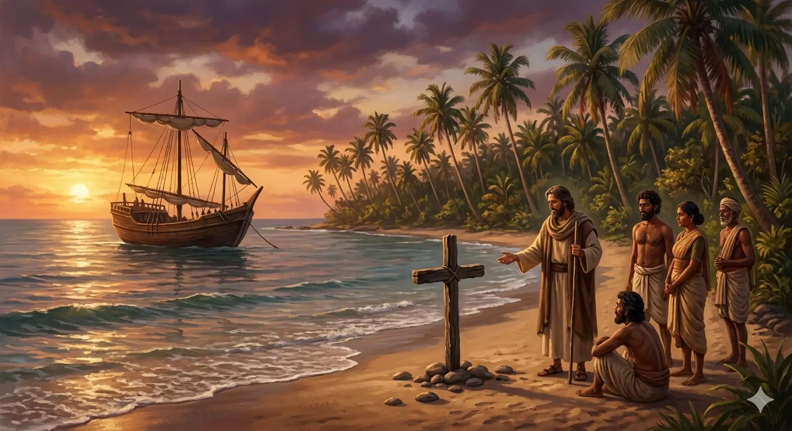
✝
486 AD
The Settlement of the "Thuras"
Historical records suggest that early Christians began settling in coastal areas known as "Thuras".
ക്രൈസ്തവരിൽ ചിലർ തുറകളിൽ കുടിയേറിയതായി ചരിത്രം സാക്ഷ്യപ്പെടുത്തുന്നു. ഇക്കാരണത്താലാണ് തിരുവിതാംകൂർ സാമ്രാജ്യത്തിന്റെ ചില പ്രദേശങ്ങൾ തുറകളിൽ അറിയപ്പെടുന്നതും ഇവ ക്രൈസ്തവ വിശ്വാസം നേരത്തെ ഉണ്ടായിരുന്നതിൻ്റെ സൂചന നൽകുന്നതും.
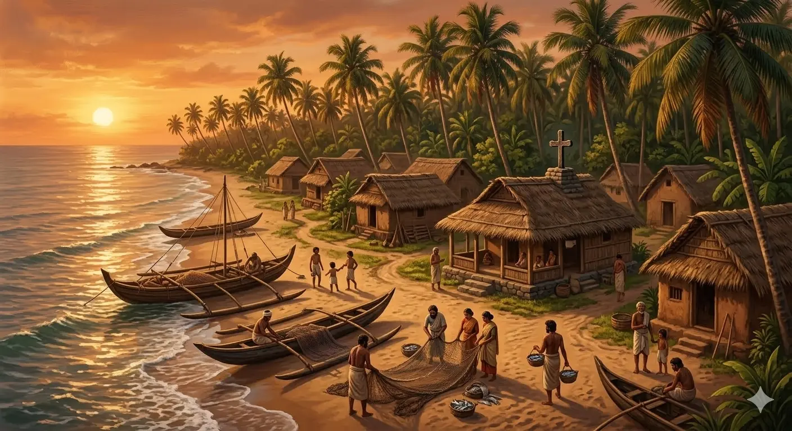
✝
AD 1544
The Mission of St. Francis Xavier
St. Francis Xavier visited the coastal regions, converting many locals and strengthening the existing faith of the community.
വി. ഫ്രാൻസിസ് സേവ്യർ ഈ പ്രദേശങ്ങൾ സന്ദർശിക്കുകയും നിരവധി പേരെ വിശ്വാസത്തിലേക്ക് നയിക്കുകയും ചെയ്തു.
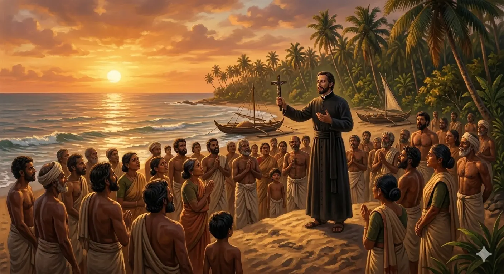
✝
1758
Port Renovation and Trade
During the reign of Dharma Raja Karthika Thirunal Rama Varma, the Poonthura port was renovated under the leadership of Prime Minister Kesavadas.
കാർത്തിക തിരുനാൾ രാമവർമ്മയുടെ (ധർമ്മരാജ) ഭരണകാലത്ത് പ്രധാനമന്ത്രി രാജാ കേശവദാസിന്റെ നേതൃത്വത്തിൽ പൂന്തുറ തുറമുഖം പുതുക്കിപ്പണിതു.
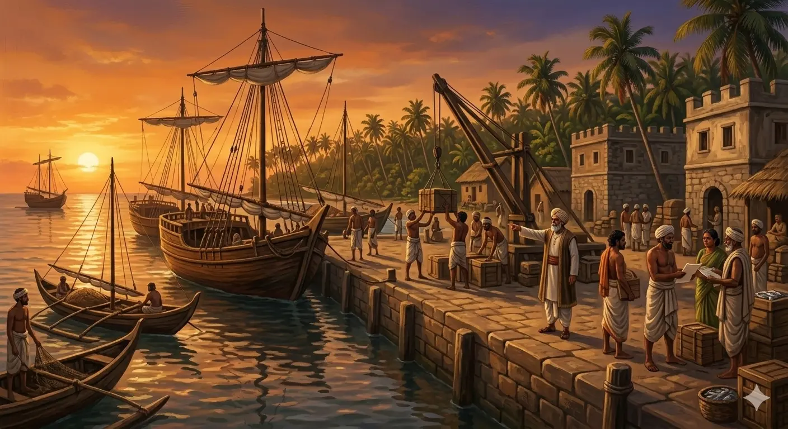
✝
1909
Establishment of St. Antony’s Shrine
To facilitate the spiritual life of the people, a shrine (Kurishadi) dedicated to St. Antony was built at Cheriyamuttom.
വിശ്വാസികളുടെ ആത്മീയ ആവശ്യങ്ങൾക്കായി ചേരിയാമുട്ടം ഭാഗത്ത് വിശുദ്ധ അന്തോനീസിന്റെ നാമത്തിൽ ആദ്യത്തെ കുരിശടി നിർമ്മിച്ചു.
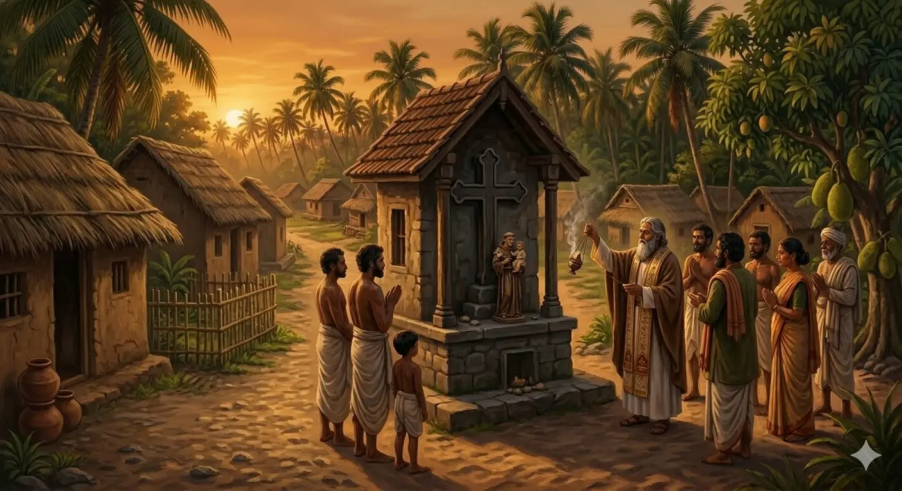
✝
1910
Foundations of Formal Education
Fr. Nazians and Assistant Vicar Fr. Joseph Perera established the first primary school in the region.
ഫാ. നസ്യാൻസും ഫാ. ജോസഫ് പെരേരയും ചേർന്ന് പ്രദേശത്തെ ആദ്യത്തെ പ്രൈമറി സ്കൂൾ സ്ഥാപിച്ചു.
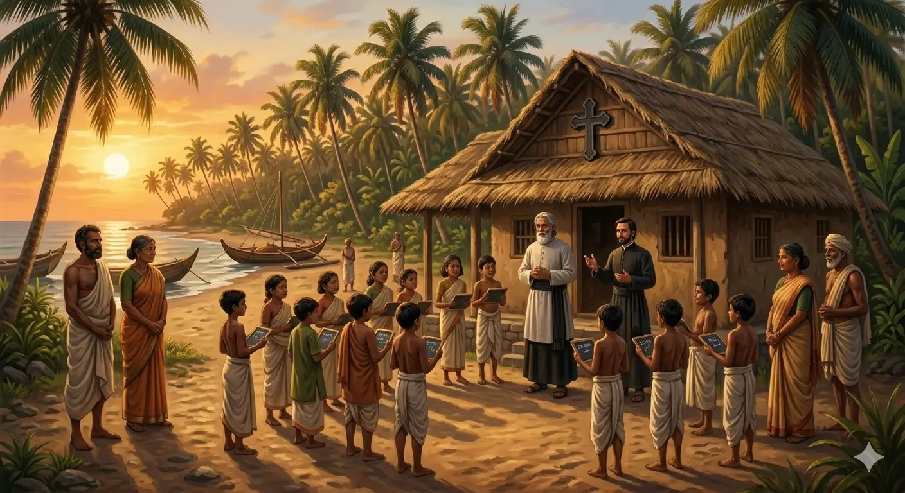
✝
1923
Government Recognition of the School
The primary school reached a significant milestone by being officially recognized as a government-aided institution.
ഈ വിദ്യാലയം സർക്കാർ അംഗീകാരമുള്ള എയ്ഡഡ് സ്കൂൾ ആയി ഉയർത്തപ്പെട്ടു.
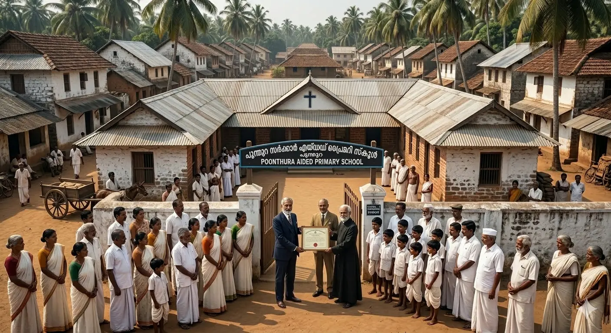
✝
1942 (Feb 11)
The Grotto of Our Lady of Lourdes
A Grotto dedicated to Our Lady of Lourdes, built by R.S. Loppo and his family, was blessed.
ആർ.എസ്. ലോപ്പോസും കുടുംബവും നിർമ്മിച്ച ലൂർദ് മാതാവിന്റെ ഗ്രോട്ടോ ആശീർവദിക്കപ്പെട്ടു.
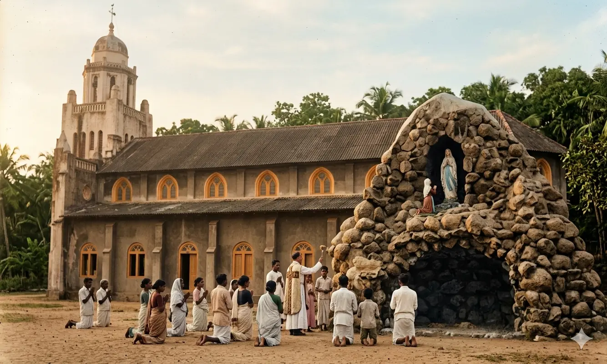
✝
1942
The Arrival of Sisters
A historic milestone in the journey of faith and service; the first Canossian Sisters arrived at the shores of Poonthura by boat, welcomed by village elders to begin their mission of education and compassion.
പൂന്തുറയുടെ വിശ്വാസവഴിയിലെയും സേവനചരിത്രത്തിലെയും സുവർണ്ണ നിമിഷം; വിദ്യാഭ്യാസത്തിനും കാരുണ്യപ്രവർത്തനങ്ങൾക്കുമായി ആദ്യമായി കനോസിയൻ സന്യാസിനികൾ വള്ളത്തിൽ തീരത്തെത്തുന്നു. ഗ്രാമമുഖ്യർ അവരെ ആദരവോടെ സ്വീകരിക്കുന്നു.
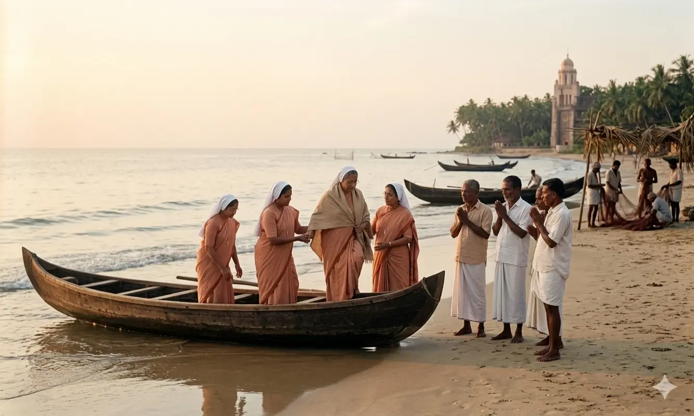
✝
1942
Empowering Poonthura: The First Girls’ Vocational Training
With the arrival of the Canossian Sisters, a new chapter of practical education began. The Sisters established a bright, airy vocational training center, where local girls were taught essential livelihoods—including how to operate sewing machines and the skilled art of candle making—equipping them with the tools for a self-sufficient future.
കനോസിയൻ സിസ്റ്റേഴ്സിന്റെ ആഗമനത്തോടെ പൂന്തുറയിൽ പ്രായോഗിക വിദ്യാഭ്യാസത്തിന്റെ ഒരു പുതിയ അധ്യായം ആരംഭിച്ചു. സിസ്റ്റേഴ്സ് ലളിതമായ ഒരു തൊഴിൽ പരിശീലന കേന്ദ്രം സ്ഥാപിച്ച്, പെൺകുട്ടികൾക്ക് തയ്യൽ മെഷീൻ പ്രവർത്തിപ്പിക്കാനും മെഴുുകുതിരി നിർമ്മാണം തുടങ്ങിയ വരുമാനദായകമായ തൊഴിലുകൾ പരിശീലിപ്പിച്ചു.
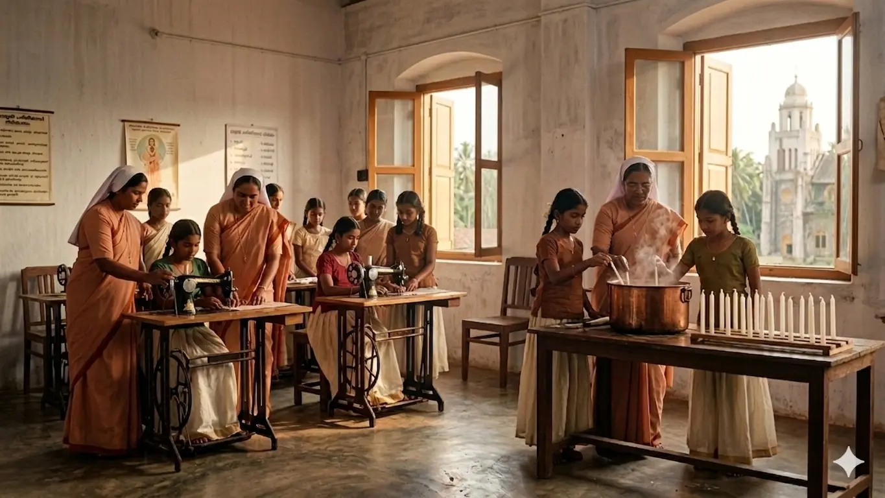
✝
1962
Transition to Middle School
Following the introduction of the "Division System," the primary school was upgraded to a Middle School.
വിദ്യാഭ്യാസ രംഗത്തെ 'ഡിവിഷൻ സിസ്റ്റം' നടപ്പിലായതോടെ സ്കൂൾ മിഡിൽ സ്കൂൾ ആയി പരിവർത്തനം ചെയ്യപ്പെട്ടു.
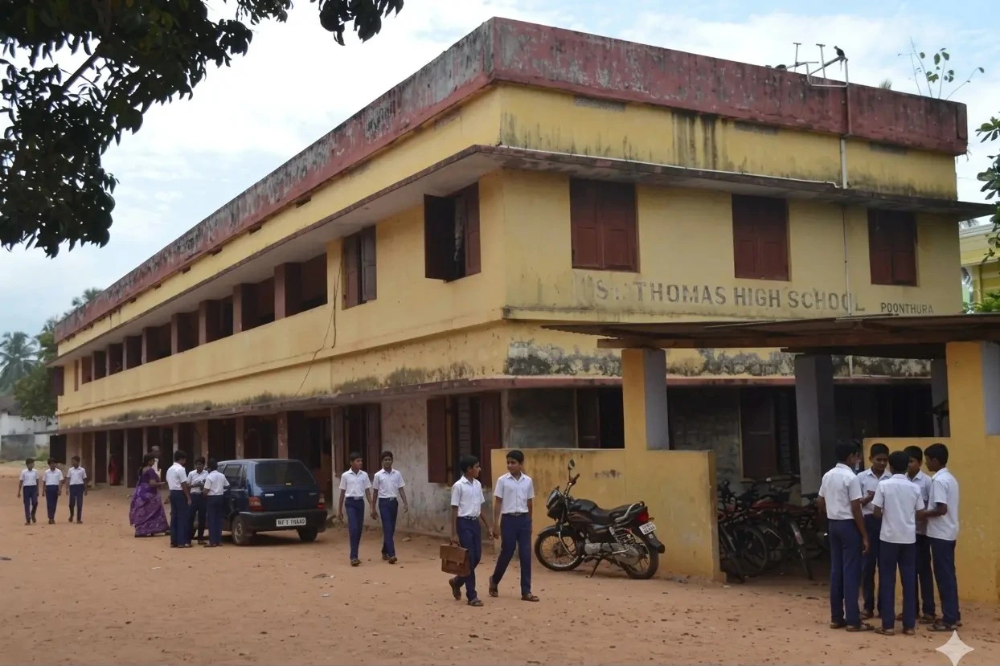
✝
1969 (Dec 21)
Blessing of St. Joseph’s Shrine
Bishop Peter Bernard Pereira blessed a new shrine dedicated to St. Joseph, completed by Mr. N.S. Fernandes.
എൻ.എസ്. ഫെർണാണ്ടസ് നിർമ്മിച്ച വിശുദ്ധ യൗസേപ്പിതാവിന്റെ കുരിശടി ബിഷപ്പ് പീറ്റർ ബർണാഡ് പെരേര ആശീർവദിച്ചു.
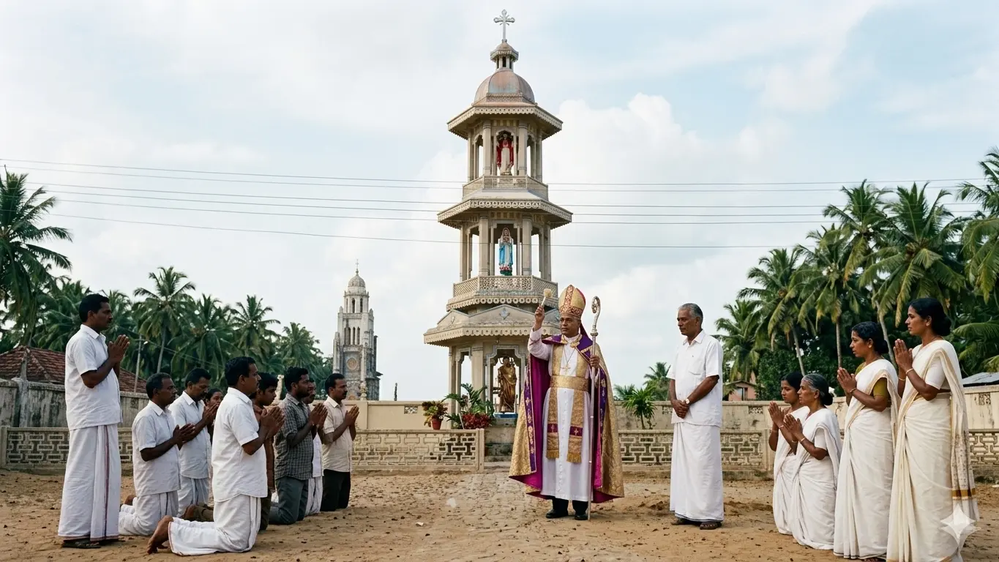
✝
1975
Renovation of the Presbytery
Fr. Benjamin Gomez oversaw the renovation and blessing of the Presbytery (the priest's official residence).
ഫാ. ബെഞ്ചമിൻ ഗോമസ് ഇടവകയിലെ വൈദിക മന്ദിരം പുതുക്കി നിർമ്മിച്ച് ആശീർവദിച്ചു.
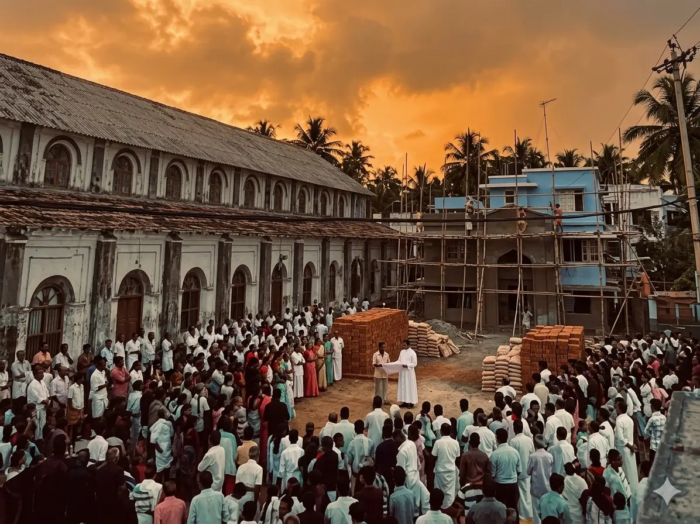
✝
1980
Elevation to High School Status
The institution was elevated to a High School, becoming a primary educational hub for the area.
പ്രദേശത്തെ പ്രധാന വിദ്യാഭ്യാസ കേന്ദ്രമായി യു.പി. സ്കൂൾ ഹൈസ്കൂളായി ഉയർത്തപ്പെട്ടു.
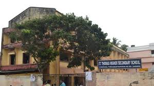
✝
1986 (Apr 14)
Foundation of the UP Building
Fr. Sylvester Morais laid the foundation stone for the Upper Primary (UP) building to expand infrastructure.
ഫാ. സിൽവസ്റ്റർ മോറായിസ് നിലവിലെ യു.പി. സ്കൂൾ കെട്ടിടത്തിന് തറക്കല്ലിട്ടു.
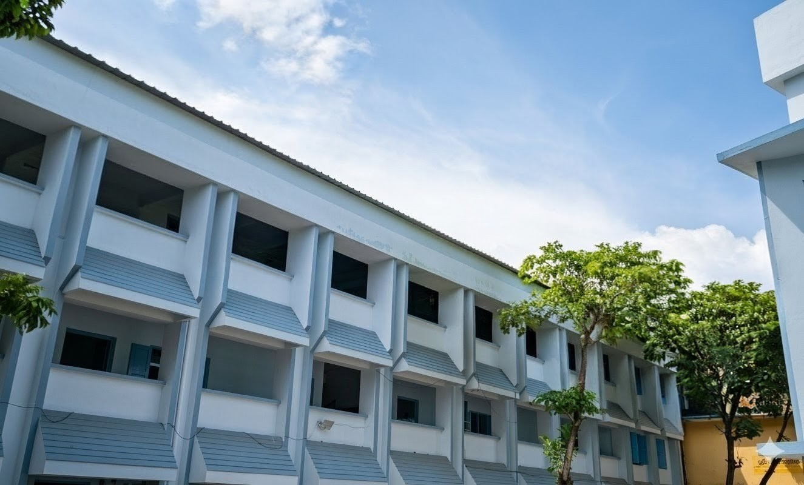
✝
1988
Shrine of Our Lady of Vailankanni
Construction was completed on a shrine dedicated to Our Lady of Vailankanni.
വേളാങ്കണ്ണി മാതാവിന്റെ നാമത്തിലുള്ള കപ്പേളയുടെ നിർമ്മാണം പൂർത്തിയായി.
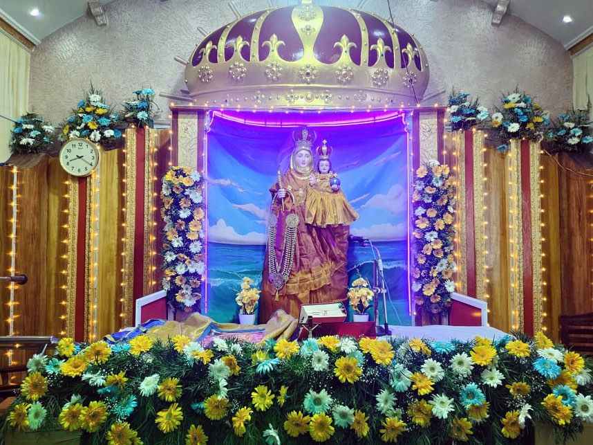
✝
1990 (June 1)
Formation of the First Parish Council
Under the guidance of Fr. John De Bosco, the first Parish Council was established via BCC.
ഫാ. ജോൺ ഡി ബോസ്കോയുടെ നേതൃത്വത്തിൽ ബി.സി.സി. വഴി ആദ്യത്തെ പാരിഷ് കൗൺസിൽ നിലവിൽ വന്നു.
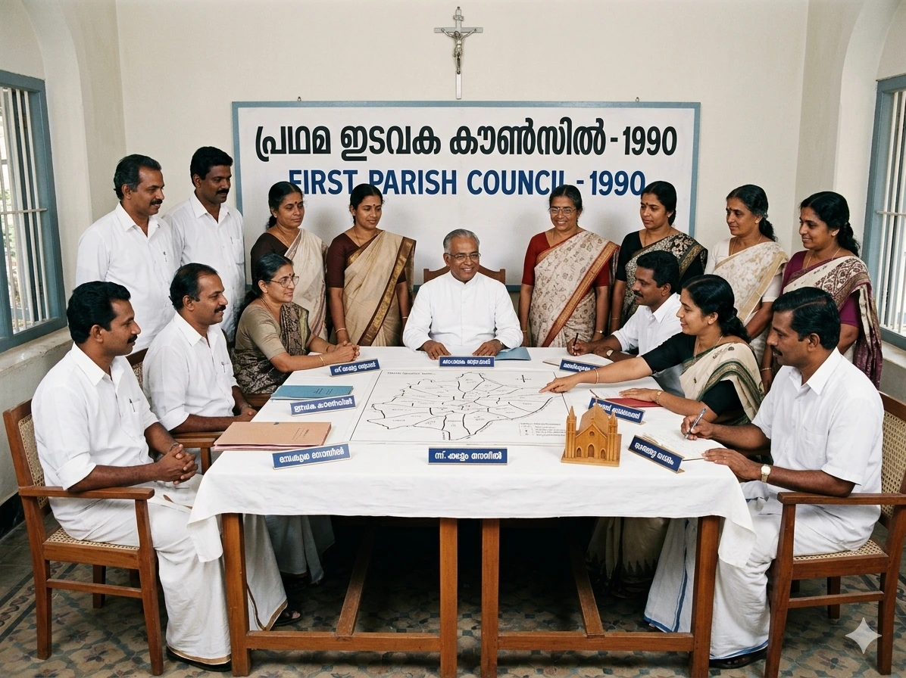
✝
1993
The IDP Housing Project
A comprehensive survey led to the IDP Project, resulting in 105 houses for the community.
ഐ.ഡി.പി പ്രോജക്റ്റിന് തുടക്കമിടുകയും 105 വീടുകൾ വിജയകരമായി നിർമ്മിച്ചു നൽകുകയും ചെയ്തു.

✝
1994 (Apr 7)
The New Parish Hall
Bishop Soosa Pakiam blessed the new Parish Hall (Kalyana Mandapam) for community gatherings.
ഇടവകയുടെ സാമൂഹിക ആവശ്യങ്ങൾക്കായി നിർമ്മിച്ച കല്യാണ മണ്ഡപം ബിഷപ്പ് സൂസപാക്യം ആശീർവദിച്ചു.
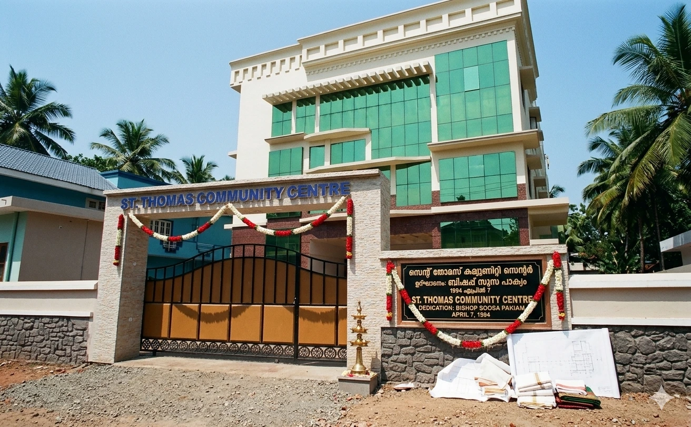
✝
2006
Blessing of the Renovated Church
The renovated main Church building was officially blessed by Bishop Soosa Pakiam.
പുതുക്കിപ്പണിത മനോഹരമായ പൂന്തുറ സെന്റ് തോമസ് ദൈവാലയം ബിഷപ്പ് സൂസപാക്യം ആശീർവദിച്ചു.
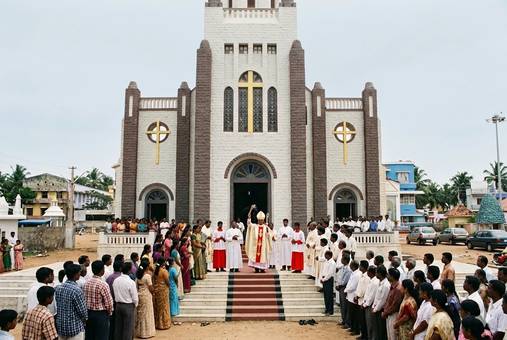
✝
2010
Streamlining and Further Renovation
Under Fr. Anto Joris, school construction and shrine renovations were completed.
ഫാ. ആന്റോ ജോറിസിന്റെ നേതൃത്വത്തിൽ സ്കൂൾ നിർമ്മാണ പ്രവർത്തനങ്ങളും കുരിശടി നവീകരണവും പൂർത്തിയായി.
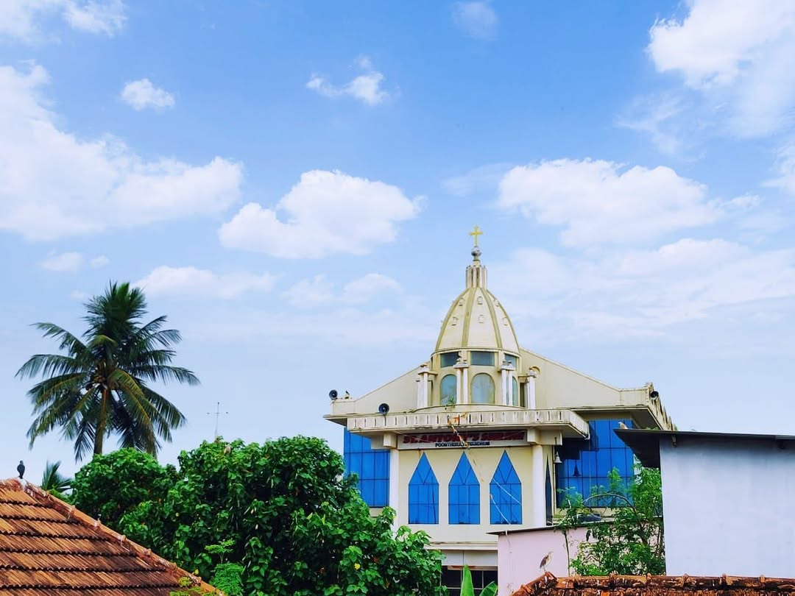
✝
2023
Modernization and Adoration Chapel
The Grotto was renovated and a Perpetual Adoration Chapel was constructed and blessed.
ഫാ. എ.ആർ. ജോണിന്റെ നേതൃത്വത്തിൽ ഗ്രോട്ടോ പുതുക്കുകയും നിത്യരാധന ചാപ്പൽ നിർമ്മിച്ച് ആശീർവദിക്കുകയും ചെയ്തു.
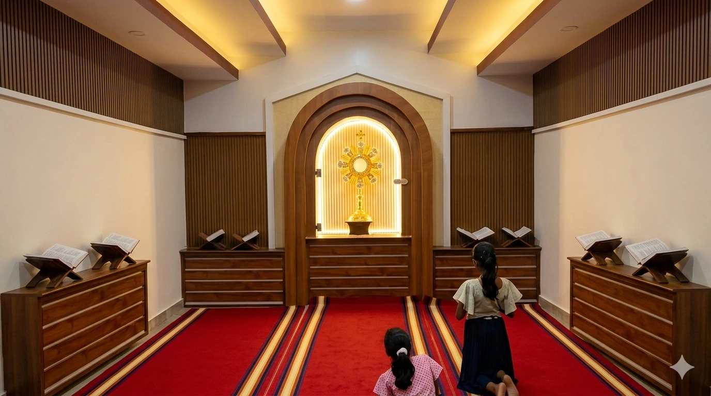
✝